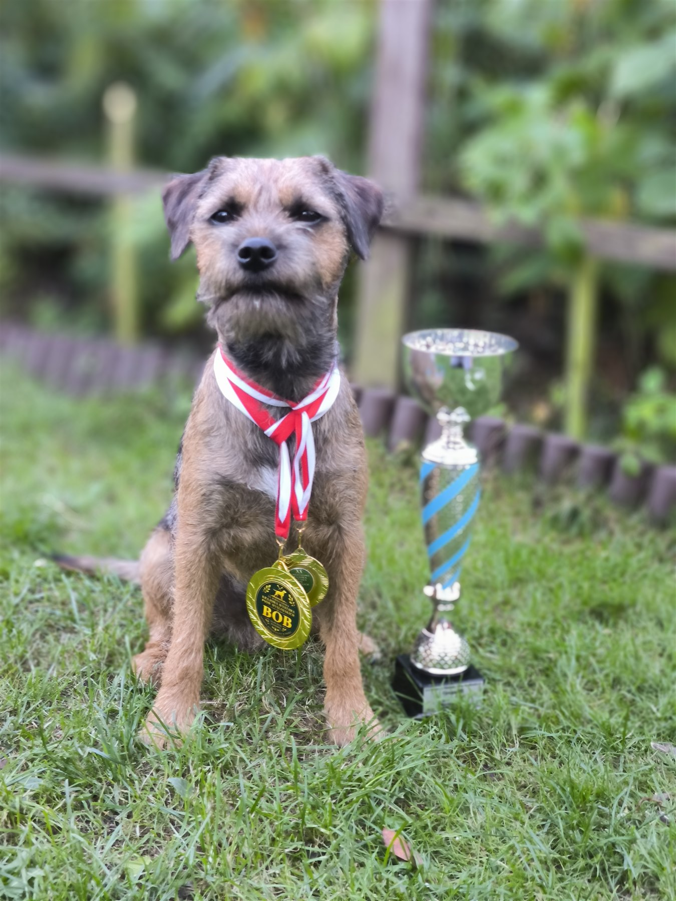
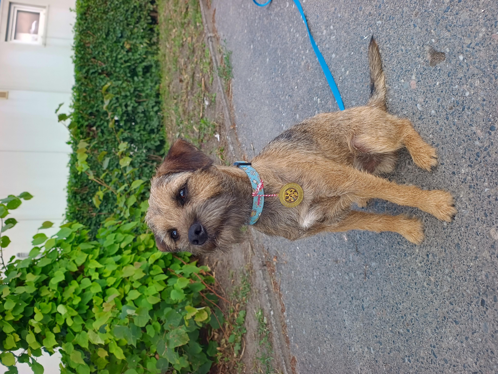
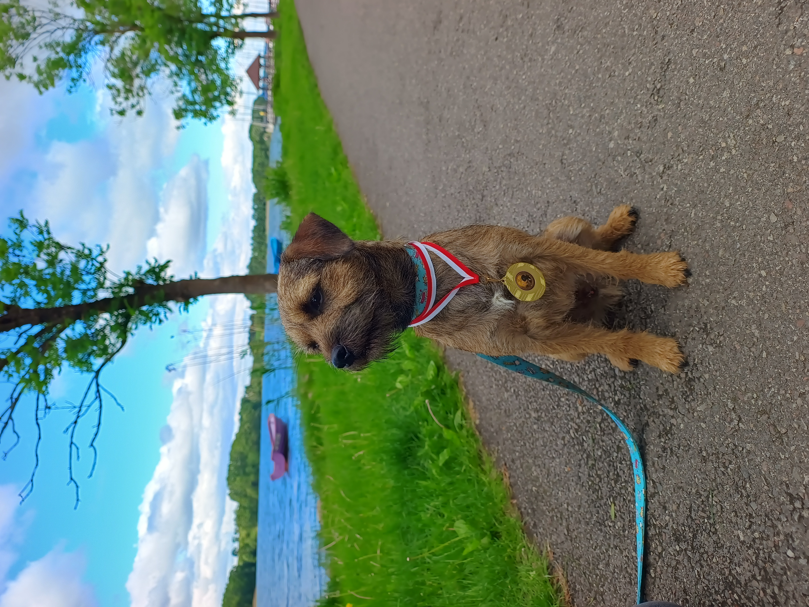
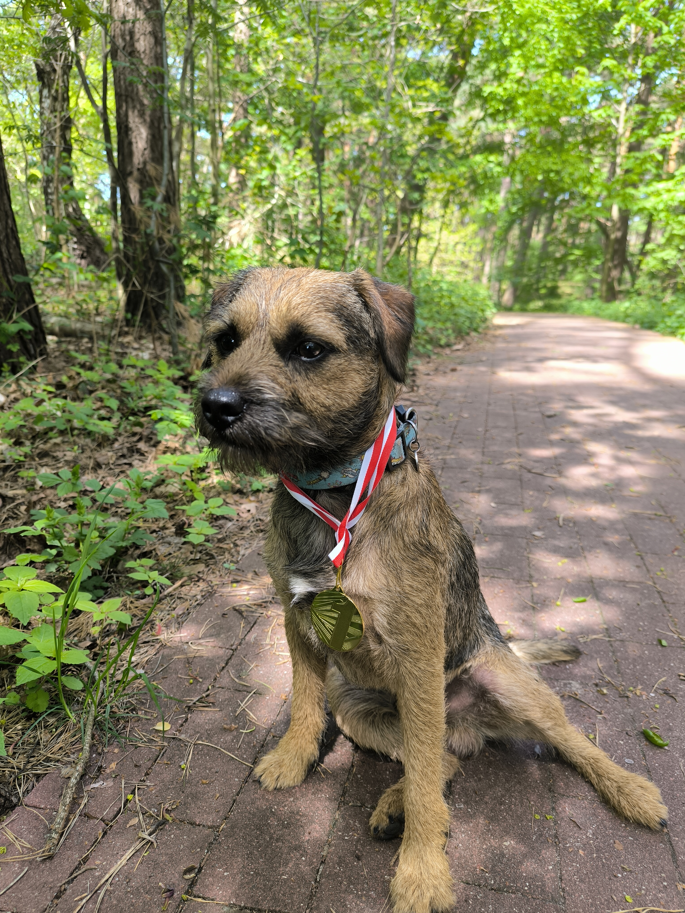

Charakter i codzienność
O Totoro
Mały pies o wielkim sercu — łagodny w domu, ciekawski na spacerach i zawsze blisko swojej rodziny.
Totoro ma wyjątkowo pogodne usposobienie. Jest bardzo towarzyski i świetnie odnajduje się wśród ludzi oraz innych zwierząt. To ciekawy świata, odważny i pełen energii Border Terrier, który szybko się uczy i chętnie podejmuje nowe wyzwania.
Najbardziej lubi długie spacery, wyprawy na grzyby oraz wyjazdy nad jeziora. Dobrze czuje się zarówno podczas rodzinnych wycieczek, jak i na wystawach, gdzie prezentuje swój charakter i urodę. To wierny przyjaciel, który każdego dnia wnosi do naszego życia mnóstwo radości i dobrej energii.
Najważniejsze starty Totoro, zdobyte oceny i tytuły.

6 września 2026 · Manowo
XX Jubileuszowa Krajowa Wystawa Psów Myśliwskich
Sędzia: Krzysztof Czechowski (PL) · ocena doskonała, lokata 1
🥇 Złoty medalZwycięzca MłodzieżyNajlepszy JuniorZwycięzca Rasy — BOBBOG IV — 4. miejsce w Grupie III FCI

11 lipca 2026 · Gorzów Wielkopolski
VI Międzynarodowa Wystawa Psów Rasowych
Sędzia: Catherine Rooney (IE) · ocena doskonała, lokata 1
🥇 Złoty medalZwycięzca MłodzieżyNajlepszy JuniorCACIB-JuniorZwycięzca Rasy — BOB
31 maja 2026 · Czaplinek
VIII Międzynarodowa Wystawa Psów Rasowych
Sędzia: Łukasz Pawłowski (PL) · ocena doskonała, lokata 1
🥇 Złoty medalZwycięzca MłodzieżyNajlepszy JuniorCACIB-Junior

30 maja 2026 · Czaplinek
Krajowa Wystawa Psów Rasowych
Sędzia: Joanna Smiłoda (PL) · ocena doskonała, lokata 1
🥇 Złoty medalZwycięzca MłodzieżyNajlepszy Junior

23 maja 2026 · Ustka
XXXVII Krajowa Wystawa Psów Rasowych
Sędzia: Dominika Kubisz (PL) · ocena doskonała, lokata 1
🥇 Złoty medalZwycięzca MłodzieżyNajlepszy JuniorZwycięzca Płci Przeciwnej — BOS
Codzienność i przygody
Galeria
Kilka ulubionych kadrów z życia Totoro.
Informacje prawne
Polityka prywatności
Najważniejsze informacje o prywatności osób odwiedzających stronę Totoro.
1. Administrator strony
Administratorem strony totoro.com.pl jest Grzegorz Strzelecki. W sprawach dotyczących prywatności można skontaktować się pod adresem grzegorz1983st@gmail.com.
2. Zakres przetwarzanych danych
Strona ma charakter informacyjny i nie posiada kont użytkowników, formularza kontaktowego, newslettera, reklam ani narzędzi analitycznych. Kontakt odbywa się przez zwykłą wiadomość e-mail. Dane przekazane w wiadomości są wykorzystywane wyłącznie w celu udzielenia odpowiedzi i prowadzenia korespondencji.
3. Hosting i dane techniczne
Strona jest udostępniana za pośrednictwem usługi GitHub Pages. Dostawca hostingu może przetwarzać podstawowe dane techniczne, takie jak adres IP, data połączenia oraz informacje o przeglądarce, w zakresie koniecznym do wyświetlenia i zabezpieczenia strony. Szczegóły opisuje oświadczenie o ochronie prywatności GitHub ↗.
4. Pliki cookies
Strona nie wykorzystuje własnych reklamowych ani analitycznych plików cookies. Dostawca hostingu może stosować rozwiązania techniczne niezbędne do prawidłowego i bezpiecznego działania usługi.
5. Odnośniki zewnętrzne
Na stronie znajduje się odnośnik do profilu w serwisie TikTok. Dopiero kliknięcie odnośnika powoduje przejście do zewnętrznego serwisu, który działa zgodnie z własnymi zasadami prywatności.
6. Prawa użytkownika
Osoba, której dane są przetwarzane w związku z korespondencją, może poprosić o dostęp do danych, ich poprawienie, usunięcie lub ograniczenie przetwarzania oraz wnieść sprzeciw. Przysługuje jej również prawo wniesienia skargi do Prezesa Urzędu Ochrony Danych Osobowych.
7. Zmiany polityki
Polityka może zostać zaktualizowana, jeśli zmieni się sposób działania strony, jej dostawcy lub obowiązujące przepisy. Ostatnia aktualizacja: 4 września 2026 r.